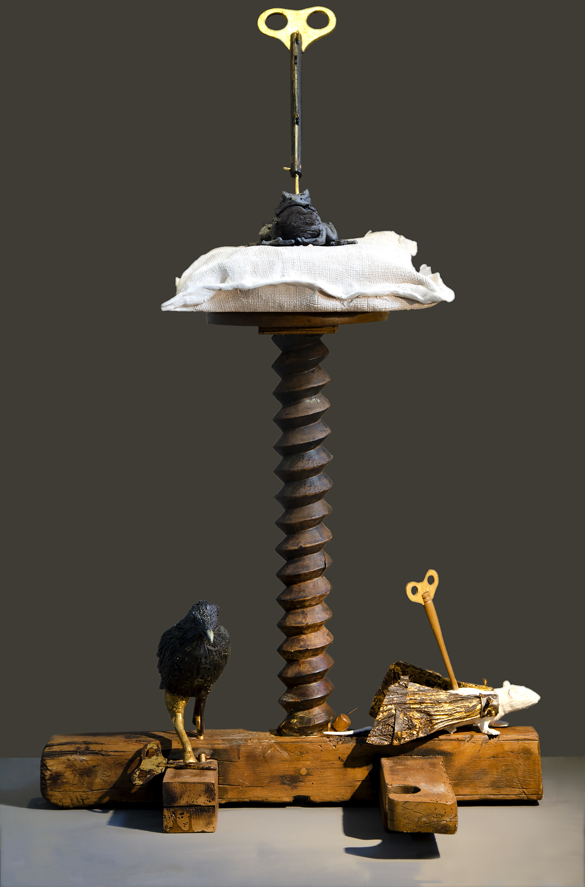

Η αντίσταση και η αλλαγή συχνά ξεκινούν από την τέχνη. Ursula LeGuin
ΤΕΧΝΗ ΓΙΑ ΕΝΑ ΠΛΗΓΩΜΕΝΟ ΠΛΑΝΗΤΗ, ΣΕΡΡΕΣ
Τζαμί Ζιτνζιρλί, Σέρρες, Οκτώβρης - Νοέμβρης 2025
Eγκαίνια: 3 Οκτωβρίου 2025, 19:30, από την Δήμαρχο Σερρών Βαρβάρα Μητλιάγκα.
Επιμέλεια: In Sutu
Συντονισμός: Βασίλης Βαφειάδης
Παραγωγή: Sotto Voce (Contemporary Arts) Ltd
Ώρες λειτουργίας: Καθημερινά 10:00 – 14:00 (εκτός Τρίτης)
Είσοδος ελεύθερη

Συμμετέχοντες Καλλιτέχνες:
Αγγελική Ανθυμίδου,
Άρης Κατσιλάκης,
Κυριάκος Καλλής,
Στέλιος Τόλιος,
Janis Jefferies,
Η έκθεση συνοδεύεται από δύο παράλληλες δράσεις:
«Ήχοι για ένα πληγωμένο πλανήτη»
στο Σύλλογο Φίλων Γραμμάτων Τεχνών στις 04/10/2025, ώρα 19:30, με την Γκαλίνα Ντίμοβα στο πίανο και βιντο-προβολή από τον Γιάννο Οικονόμου.
«Φωνές για ένα Πληγωμένο Πλανήτη»
στο Μπεζεστένι Σερρών, στις 11/10/2025, ώρα 19:30, με την μικτή χορωδία Coro Amina, και μαέστρο τον Χρίστο Ντόβα.
Έντεκα καλλιτέχνες από τις Σέρρες, την Κύπρο και την Αγγλία συζητούν μέσω της τέχνη τους την τρέχουσα απέλπιδα πορεία μας στο Zιντζιρλί Τζαμί Σερρών τον Οκτώβρη του 2025. Η κλιματική κρίση, η εξάντληση των πόρων του πλανήτη για έναν ανούσιο υπερκαταναλωτισμό, η αυξανόμενη ανισότητα, η βαναυσότητα προς τους συνανθρώπους μας και την υπόλοιπη βιόσφαιρα, οικοκτονία και ανήθικοι πόλεμοι επιβάλλουν μια δραστική επανατοποθέτηση. Το εύρος όμως των απαιτούμενων αλλαγών μας παραλύει.
Μέσα σε αυτό το πλαίσιο, το όραμα για έναν εναλλακτικό πλανήτη βρίσκεται στο επίκεντρο της έκθεσης, χωρίς την προσποίηση ότι προσφέρονται λύσεις. Η τέχνη δεν μπορεί να δώσει λύσεις. Η τέχνη βοηθά στην σύλληψη ιδεών, που θα ήταν αδύνατη μέσα στα όρια των ανθρωποκεντρικών μας αισθήσεων. Η τέχνη λειτουργεί ως μεσολαβητής ανάμεσα σε διαφορετικές σφαίρες: την Επιστήμη, την Πολιτική και τον Πολιτισμό, ανάμεσα σε διαφορετικές ομάδες και διαφορετικές χρονικές στιγμές της ιστορίας, ανάμεσα στο πραγματικό και το φανταστικό, το φυσιολογικό και το αλλόκοτο, και, ναι, ανάμεσα στους ανθρώπους και τα υπόλοιπα είδη.
Και ίσως η τέχνη να μπορεί να γίνει το έναυσμα για αντίσταση και αλλαγή.
Είναι η τρίτη έκθεση της ομάδας In Sutu με αυτή τη θεματική. Οι δύο προηγούμενες έγιναν στην Δημοτική Πινακοθήκη Πάφου και την Δημοτική Πινακοθήκη Λάρνακας το 2024.
Θα θέλαμε να ευχαριστήσουμε το Υφυπουργείο Πολιτισμού για τη οικονομική στήριξη της έκθεσης, το Δήμο Σερρών και την Δήμαρχο για τη στήριξη τους, την Εφορεία Αρχαιοτήτων Σερρών για την άδεια χρήσης του Τζαμί Ζιντζιρλί και του Μπεζεστένι, και το και τον Σύλλογο Φίλων Γραμμάτων & Τεχνών Σερρών για την φιλοξενία, και το Σπίτι της Κύπρου.
Χορηγοί: Υφυπουργείο Πολιτισμού Κυπριακής Δημοκρατίας, Δήμος Σερρών.
Υποστηρικτές: Εφορεία Αρχαιοτήτων Σερρών, Σύλλογος Φίλων Γραμμάτων και Τεχνών Σερρών, το Σπίτι της Κύπρου.

ART FOR A WOUNDED PLANET, SERRES
Eleven artists from Serres, Cyprus, and England explore our current precarious trajectory through their art at the Zinzirli Mosque in Serres, in October 2025. The climate crisis, the depletion of the planet's resources due to excessive consumption, growing inequality, brutality towards fellow humans and the rest of the biosphere, ecocide, and immoral wars demand a radical shift in our direction. However, the magnitude of the necessary changes can be paralyzing.
Within this context, the vision for an alternative planet is at the heart of the exhibition, without claiming to offer solutions. Art cannot provide definitive solutions. Instead, art helps to conceive ideas that might be impossible within the confines of our anthropocentric perspective. Art can act as a mediator between different spheres: science, politics, and culture; between diverse groups and historical periods; between the real and the imaginary, the normal and the unusual; and, importantly, between humans and other species.Perhaps, art can serve as a catalyst for resistance and change.
This is the third exhibition by the In Sutu group on this theme. The previous two were held at the Paphos Municipal Gallery and the Larnaca Municipal Gallery in 2024.